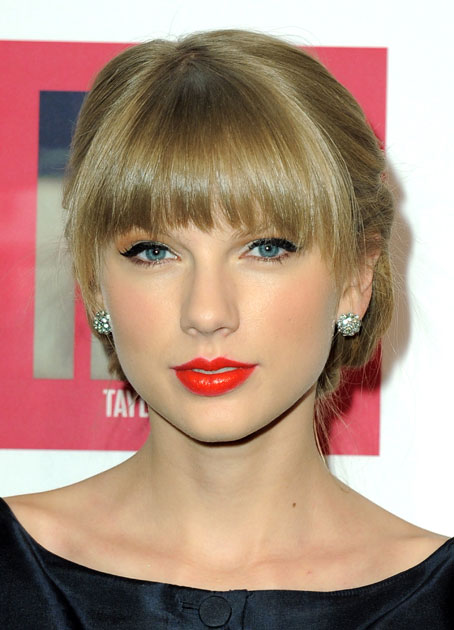

21세기 대중음악계의 대표적인 인물. 빌보드에서 뽑은 2010년대 가장 성공한 여성 음악가로 선정되었다.
앨범 판매량, 싱글, 투어와 팬덤 규모, 그래미 및 평단 등 다방면에서 밸런스를 갖춘 커리어를 자랑하며,
특히 앨범 판매량과 투어에 있어서는 압도적이다.
미국에서 총판 100만 장만 넘겨도
성공했다는 소리를 듣는 시대에 1집부터 6집까지 400만 장 이하로 판 앨범이 없을 정도.
팝으로 전향한 이후부터는 약하다고 지적받았던 싱글 성적도 좋은 성과를 보여주었다.
또한 2006년 데뷔 때부터 2021년 지금까지 발매한 9개의 정규앨범을 빠짐없이 모두 성공시켰다.